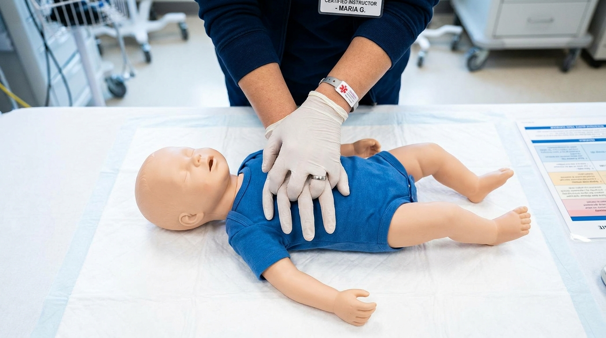
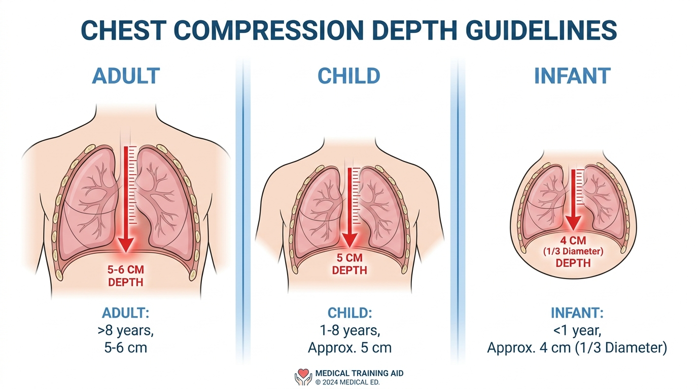
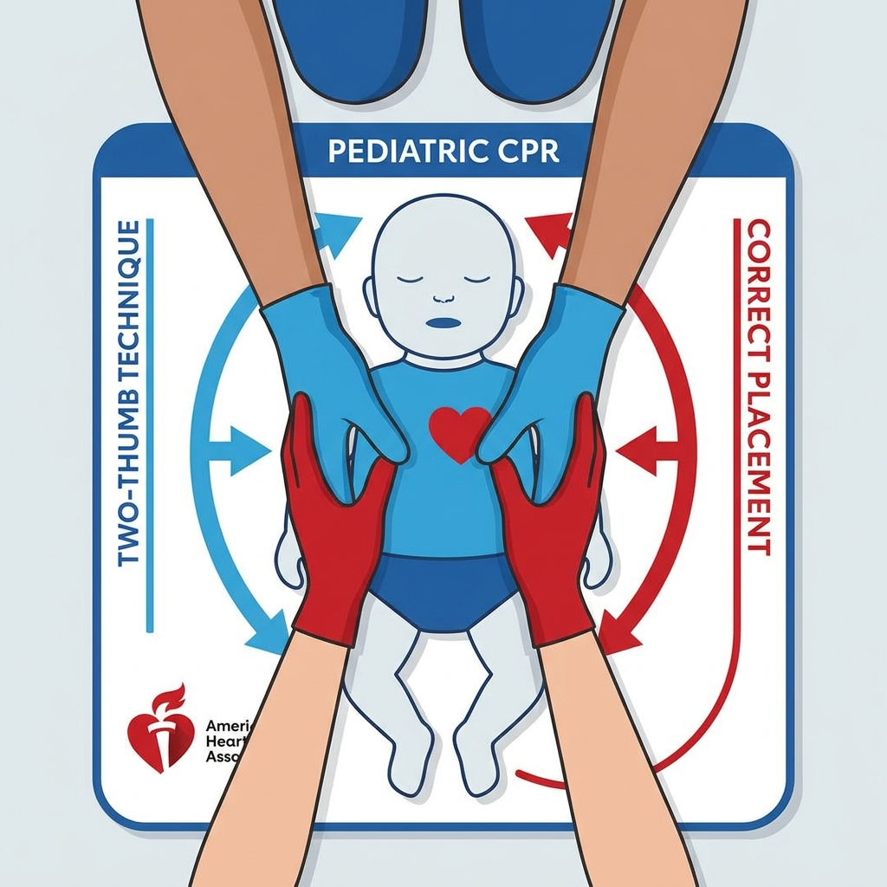
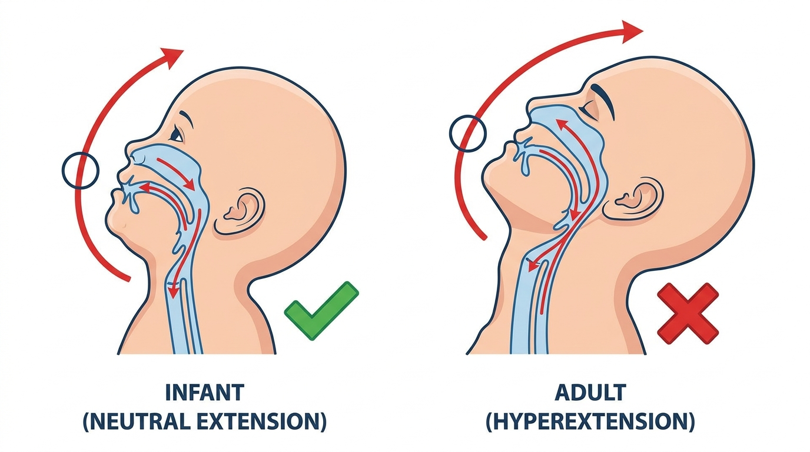

Un paro cardíaco en un lactante o un niño casi nunca es igual a uno en un adulto. Las causas, la fisiología, los parámetros técnicos y hasta la forma de comunicarse con los padres son radicalmente diferentes. Y_apply las mismas reglas que aprendiste para adultos puede ser no solo ineficaz, sino peligroso.
En adultos, la causa más frecuente de paro cardíaco es de origen cardíaco primario: un corazón enfermo que deja de latir. En niños y lactantes, la causa más común es la asfixia respiratoria — ahogamiento, obstrucción de vía aérea por cuerpo extraño, neumonía, asma severa, drowning, trauma. Esto cambia todo el enfoque.
Esto significa que la secuencia de la cadena de supervivencia pediátrica prioriza la ventilación antes que las compresiones torácicas. En el adulto, el énfasis está en las compresiones de alta calidad con mínima interrupción. En pediatría, el problema frecuentemente es que no hay ventilación, y sin oxígeno no hay compresión que funcione.

La referencia de "4 cm" o "5 cm" es una aproximación. En lactantes, muchos instructores usan la regla práctica: comprimir al menos un tercio del diámetro anteroposterior del tórax. En un lactante pequeño, eso puede ser apenas 4 centímetros — y en uno más grande, cerca de 5.

La técnica de los dos pulgares envueltos (thumbs-encircling-hands) es la preferida cuando hay dos reanimadores porque genera mejor presión de perfusión coronaria. Pero requiere entrenamiento. Un solo reanimador puede usar los dos dedos con resultados aceptables.
El ritmo es el mismo en todas las edades: 100 a 120 compresiones por minuto. Aquí el protocolo no cambia entre adulto y pediátrico. Lo que sí cambia es la relación compresión:ventilación.
Aquí hay un punto que confunde mucho: si el niño tiene un trauma o asfixia (causa respiratoria), muchos protocolos sugieren comenzar con 5 ventilaciones iniciales antes de iniciar compresiones. Esto es porque el problema primario es la falta de oxígeno. Ventilar primero puede cambiar el outcome antes de que las compresiones tengan sentido.
En adultos, una ventilación normal es suficiente para ver que el pecho se eleva. En lactantes, el volumen es mucho menor — el estómago de un bebé se llena con muy poco aire, y la distensión gástrica es un riesgo real que aumenta la presión intratorácica y reduce la ventilación efectiva.
La regla es simple: ver el pecho elevarse微微, no más. Y en lactantes se recomienda cubrir la nariz y la boca al ventilar (técnica boca-nariz-boca), mientras que en niños se puede usar la misma técnica que en adultos (boca-boca).

En el adulto, la cabeza en extensión con elevación del mentón (head-tilt-chin-lift) es la maniobra padrão. En lactantes, la extensión debe ser neutra o ligeramente extendida — no tanto como en el adulto. La hiperextensión puede colapsar la vía aérea del bebé, que es mucho más blanda y colapsable.
La maniobra de tracción mandibular (jaw thrust) es preferida en lactantes cuando hay sospecha de trauma cervical, porque no requiere mover el cuello. En la práctica, si no hay trauma evidente, la extensión neutral con elevación del mentón es el punto de partida.
Cuando un profesional de salud capacitado en RCP para adultos atiende su primer paro pediátrico, el error más común es comprimir demasiado profundo. El reflejo de comprimir con la fuerza adecuada para un adulto se traduce, por puro instinto, en compresiones excesivas para un niño pequeño.
Las fracturas costales y el trauma torácico en lactantes durante RCP son más frecuentes de lo que deberían ser, y casi siempre se explican por este desajuste de fuerza. Por eso la práctica en maniquíes pediátricos no es negociable: el cuerpo guarda la memoria de la profundidad correcta.
En un paro pediátrico, el entorno emocional es radicalmente diferente. Los padres están presentes, asustados, llorando, gritano. Hay una presión psicológica enorme que no existe en el paro de un adulto. Esa presión genera errores: intentar compresiones sin haber ventilado lo suficiente, detener las compresiones para explicar a los padres, o simplemente entrar en pánico y no actuar.
El entrenamiento en simulación pediátrica trabaja exactamente esto: la capacidad de mantener el protocolo bajo presión emocional extrema. Los cursos de proveedor PALS (Pediatric Advanced Life Support) de la AHA incluyen escenarios con padres simulados precisamente para entrenar esta competencia.
Si trabajas con niños — como padre, abuelo, maestro, entrenador, enfermero, paramédico o médico — necesitas formación específica en RCP pediátrico. El curso Heartsaver RCP y DEA de la American Heart Association incluye módulos separados para adultos, niños y lactantes, y es el punto de partida recomendado para cualquier persona que no sea profesional de salud.
Si eres profesional de salud, el curso PALS (Pediatric Advanced Life Support) es el estándar. Cubre desde la evaluación del niño críticamente enfermo hasta el manejo avanzado del paro pediátrico, con énfasis en la toma de decisiones clínicas rápidas.
Ningún curso sustituye la práctica periódica. La certificación AHA tiene vigencia de dos años, pero la retención de habilidades empieza a caer a los seis meses. Por eso en Asesores en Emergencias recomendamos reentrenamiento práctico al menos una vez al año.
¿Trabajas con niños o necesitas capacitar a tu equipo en RCP pediátrico?
En Asesores en Emergencias ofrecemos cursos Heartsaver y PALS con instructores certificados AHA. Escríbenos a jperez@emergencias.com.mx o visita www2.emergencias.com.mx.